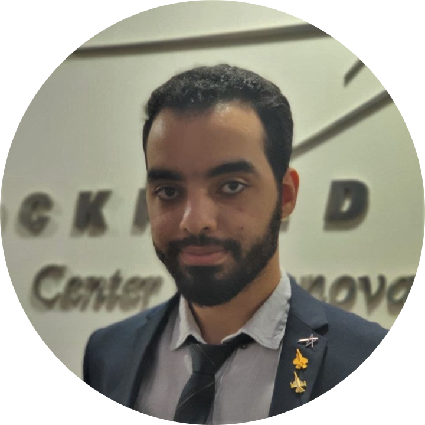
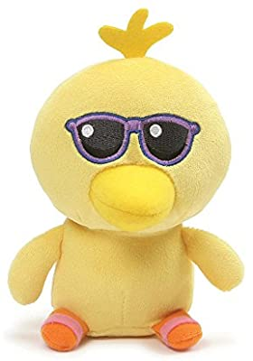

Abdalla Rashed
Computer Vision Engineer
https://github.com/r-evaar
Abu Dhabi, UAE
Machine Learning developer in Computer Vision applications with
an Electrical Engineering background. I possess high analytical and
programming skills and I am seeking to grow my experience in AI
research & development.
Experience
Project Engineer
Esterline Project Management Services, UAE
Lockheed Martin CISS, UAE (Contractor)
-
Research & development for an automated FOD
detection system for aircraft engine bay
inspection.
-
Support for workshops & mentorship sessions.
Artificial Intelligence Intern
Lockheed Martin CISS, UAE
-
Research & development for an AI aircraft
inspection program and other ML projects.
-
Projects presentation to executives & CISS VIP
guests.
Electrical Engineering Intern
Abu Dhabi University, UAE
-
Research & simulation for social-distance
monitoring, vehicles detection, lane detection &
behavior cloning projects.
-
Preparing lab manuals for a self-driving course.
-
Preparing and testing course kits for self-driving
robot project.
Contact Me